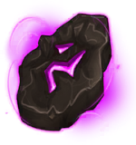
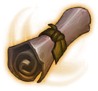

장비 134종
장비는 W_Item_Scriptable 하나에 정의되어 있습니다. 부위 10종, 등급 4단계이고, 장비마다 기본 스탯·특수 효과(설명문)·제작 조건(확률·시간·골드)·강화 재료·제작 재료 목록을 가집니다.
부위 × 등급 분포
| 부위 | C | R | E | RD | 합계 |
|---|---|---|---|---|---|
| 무기 | 5 | 7 | 8 | 10 | 30 |
| 투구 | 1 | 3 | 3 | 7 | 14 |
| 상의 | 1 | 1 | 3 | 7 | 12 |
| 하의 | 1 | 1 | 3 | 7 | 12 |
| 신발 | 1 | 3 | 3 | 7 | 14 |
| 방패 | 1 | 4 | 3 | 2 | 10 |
| 목걸이 | 1 | 1 | 3 | 7 | 12 |
| 반지 | 1 | 1 | 3 | 7 | 12 |
| 정수 | 4 | 6 | 2 | 2 | 14 |
| 벨트 | 1 | 1 | 1 | 1 | 4 |
| 합계 | 17 | 28 | 32 | 57 | 134 |
착용 직업 제한: 공용 85, 워리어 9, 메이지 9, 헌터 9, 어쌔신 9, 팔라딘 9, 착용불가 4. 직업 전용 장비는 모두 레전더리입니다 [확인 — 직업 제한 장비 45건의 등급 전수].
제작 조건 범위 (등급별)
| 등급 | 장비 수 | 제작 확률 %(Item_Chance) | 제작 시간 분(Item_Time) | 제작 골드(Gold) | 강화 보호 재료(o_item) |
|---|---|---|---|---|---|
| C | 17 | 50 ~ 100 | 0.17 ~ 1,440 | 500,000 ~ 50,000,000 | 망치 16, 전설 망치 1 |
| R | 28 | 50 ~ 100 | 0.5 ~ 1,440 | 1,500,000 ~ 75,000,000 | 망치 27, - 1 |
| E | 32 | 50 ~ 100 | 60 ~ 1,440 | 5,000,000 ~ 150,000,000 | 전설 망치 31, 망치 1 |
| RD | 57 | 40 ~ 50 | 720 ~ 1,440 | 50,000,000 ~ 75,000,000 | 전설 망치 55, 망치 2 |
1.13.14 소스 기준 필드 의미: Item_Chance = 제작 성공 확률(%), Item_Time = 제작 시간(분), Gold = 제작 시작 시 차감 골드, m_List = 제작 재료, o_item·O_Count = 강화 실패 시 장비를 지키는 보호 재료(망치)와 수량 (Create_Mng.cs·Create_Check.cs·Equipment_Item_DES.cs). 실패하면 재료·골드는 돌려받지 못하고, 레전더리 실패만 보상 아이템이 있습니다.
등급 대비 튀는 값
같은 등급 장비들의 중앙값과 비교해 제작 골드가 5배 이상이거나 1/5 이하, 또는 제작 시간이 중앙값의 10배 이상인 장비입니다(전수 비교).
| 장비 | 등급 | 부위 | 튀는 값 | |
|---|---|---|---|---|
| 회복의 정수 | C | 정수 | 골드 50,000,000 (중앙값 500,000) · 시간 1,440 (중앙값 0.17) | |
 | 흡수의 정수 | C | 정수 | 골드 50,000,000 (중앙값 500,000) · 시간 1,440 (중앙값 0.17) |
| 오래된 곡괭이 | C | 정수 | 골드 50,000,000 (중앙값 500,000) · 시간 1,440 (중앙값 0.17) | |
| 펌킨의 일기 1권 | C | 정수 | 골드 50,000,000 (중앙값 500,000) · 시간 1,440 (중앙값 0.17) | |
| 헌터의 정수 | R | 정수 | 골드 75,000,000 (중앙값 1,500,000) · 시간 1,440 (중앙값 0.5) | |
| 워리어의 정수 | R | 정수 | 골드 75,000,000 (중앙값 1,500,000) · 시간 1,440 (중앙값 0.5) | |
| 어쌔신의 정수 | R | 정수 | 골드 75,000,000 (중앙값 1,500,000) · 시간 1,440 (중앙값 0.5) | |
| 메이지의 정수 | R | 정수 | 골드 75,000,000 (중앙값 1,500,000) · 시간 1,440 (중앙값 0.5) | |
| 팔라딘의 정수 | R | 정수 | 골드 75,000,000 (중앙값 1,500,000) · 시간 1,440 (중앙값 0.5) | |
| 펌킨의 일기 2권 | R | 정수 | 골드 75,000,000 (중앙값 1,500,000) · 시간 1,440 (중앙값 0.5) | |
| 찬란한 곡괭이 | E | 정수 | 골드 150,000,000 (중앙값 5,000,000) · 시간 1,440 (중앙값 60) | |
 | 펌킨의 일기 3권 | E | 정수 | 골드 75,000,000 (중앙값 5,000,000) · 시간 1,440 (중앙값 60) |
제작 재료 참조 이상
게임 안에서는 형이 맞지 않는 참조가 빈 값(null)으로 읽혀 제작 재료 칸이 비거나 오류가 날 수 있습니다 추정. 검토 제안 1.14 빌드를 배포하기 전에 에디터에서 장비 에셋의 m_List를 열어 'Type mismatch'·'Missing' 표시가 있는지 확인하는 편이 안전합니다.
부위별 문서
제작·강화·세트·벨트 규칙 (1.13.14 소스 기준)
APK(1.14.0.1)는 IL2CPP라 메서드 본문이 없어서, 원본 저장소의 1.13.14 소스에서 규칙을 읽었습니다. 1.14에서 바뀌었을 수 있습니다.
| 시스템 | 규칙 | 값 | 근거 | |
|---|---|---|---|---|
| 제작 | Item_Chance 의미 | 제작 성공확률(%) | Mng/Create_Mng.cs:322,329 | |
| 제작 | Item_Time 의미 | 제작시간(분) | Mng/Create_Mng.cs:218,526 | |
| 제작 | Gold 의미 | 제작 시작시 차감 골드 | UI/UI/#Create/Create_Check.cs:40 | |
| 제작 | m_List 의미 | 제작 재료(Item,Count), 시작시 차감 | UI/UI/#Create/Create_Check.cs:83-124 | |
| 제작 | o_item/O_Count 의미 | 강화 보호재료(망치)/수량 | UI/UI/#Character_Item/Equipment_Item_DES.cs:48-49 | |
| 제작 | 동시 제작 | 1건 | UI/UI/#Create/Create_Check.cs:35 | |
| 제작 | 저장형 타이머(>=1분) | Item_Time*(1-(상점50+칭호)/100) 분, 서버시간 | Mng/Create_Mng.cs:193,521,526 | |
| 제작 | 로컬 타이머(<1분) | Item_Time*Buff/100*60초 (공식 불일치) | Mng/Create_Mng.cs:211-218 | |
| 제작 | 성공 판정 | round1(Random0~100) <= Item_Chance+칭호제작확률 | Mng/Create_Mng.cs:318-329 | |
| 제작 | 기록서 | O#11 x6 -> 100% 성공 즉시완료 | UI/UI/#Create/UI_Create.cs:69,76; Mng/Create_Mng.cs:313 | |
| 제작 | 즉시완성 비용 | O#5: 정수류·곡괭이70, C1 R5 E30 RD70, 남은시간<50%면 절반 | UI/UI/#Create/UI_Create.cs:92-152 | |
| 제작 | 실패 시 | 재료·골드 소멸; RD 실패만 Recod 2개(SD/W/R)/1개 | Mng/Create_Mng.cs:377,382 | |
| 제작 | 취소 시 | m_List 우편 반환, 골드 반환 없음 | Mng/Create_Mng.cs:299 | |
| 제작 | LS 연속기록 | 실패+1/성공(E,RD) -1, 반대면 리셋, 해골 고서·해골 검 제외 | Mng/Create_Mng.cs:333-368 | |
| 제작 | LS 칭호 | 5실패#3, 7#20, 10#4, 15#5, -5#6, -10#7, -15#8 | Mng/Create_Mng.cs:399-432 | |
| 제작 | 합성 일반 | 30*배수(1~5) 소모 -> 배수개 | UI/UI/#Create/UI_Add_UP.cs:230,263-273 | |
| 제작 | 합성 고급 | 500 소모 -> 1~4개 | UI/UI/#Create/UI_Add_UP.cs:18; UI/UI/#Create/Add_Up.cs:174 | |
| 제작 | 합성 선택 | rv=Random(0,80), Chance>=rv 후보 균등 | UI/UI/#Create/Add_Up.cs:81,90 | |
| 장비 강화 | 최대 강화 | +10 | UI/UI/#Character_Item/Equipment_Item_DES.cs:171; Mng/Character_Mng.cs:930 | |
| 장비 강화 | 확률/골드 | 다음레벨 UpgradeStat.Chance/Gold | Mng/Character_Mng.cs:1124-1125 | |
| 장비 강화 | 판정 | Random(0,100)<=Chance, 골드는 항상 차감 | Mng/Create_Mng.cs:136,141 | |
| 장비 강화 | 실패-보호없음 | 슬롯 제거=파괴 | Mng/Create_Mng.cs:163; Mng/Character_Mng.cs:706-713 | |
| 장비 강화 | 실패-망치 | 0~3단계 하락 Random.Range(0,4) | Mng/Create_Mng.cs:158; Mng/Character_Mng.cs:816 | |
| 장비 강화 | 실패-망치+하락방지 | 유지, 하락방지 O#12 x10 | Mng/Create_Mng.cs:129,154 | |
| 장비 강화 | 망치 사용 제한 | 확률100%면 불가; 하락방지는 망치와 함께만 | UI/UI/#Character_Item/Equipment_Item_DES.cs:195,222-230 | |
| 장비 강화 | 장착 시 강화 초기화 | CIL=0; E슬롯만 기존장비 반환 | Mng/Character_Mng.cs:620,643 | |
| 장비 강화 | 타 슬롯 교체시 기존 장비 | 반환 코드 미확인(소멸 가능성) | Mng/Character_Mng.cs:616-650 | 추정 |
| 장비 강화 | 성수 정화 | 라바6종->신화6종, Item#35 x30, 장착시 강화 유지 | UI/UI/Holy Water_Ui.cs:76-83,114-129 | |
| 장비 강화 | O#2/#3 | 망치/전설 망치 | UI/UI/#Character_Item/Equipment_Item_DES.cs:108-109 | 추정 |
| 세트효과 | 우선순위 | 성기사6>마법사6>암살자6>광전사6>사냥꾼6>라바3>플레어6>루나6>실프6 (1개만) | Mng/ItemSet_Mng.cs:101-146 | |
| 세트효과 | 성기사6 | ATK+0.3, DFS 0.3/0.3, 쿨0.2 | Mng/ItemSet_Mng.cs:211-216 | |
| 세트효과 | 마법사6 | ATK+0.6, 쿨0.2 | Mng/ItemSet_Mng.cs:224-227 | |
| 세트효과 | 암살자6 | ATK+0.6, 쿨0.2 | Mng/ItemSet_Mng.cs:235-238 | |
| 세트효과 | 광전사6 | ATK+0.3, DFS 0.3/0.3, 쿨0.2 | Mng/ItemSet_Mng.cs:247-252 | |
| 세트효과 | 사냥꾼6 | ATK+0.3, DFS 0.3/0.3 | Mng/ItemSet_Mng.cs:261-265 | |
| 세트효과 | 라바3/6/8 | 3: ATK0.3 DFS0.3/0.3; 6: ATK0.6 DFS0.3/0.3 쿨0.15; 8: ATK0.6 DFS0.3/0.3 쿨0.35 스폰6 칭호27 | Mng/ItemSet_Mng.cs:183-205 | |
| 세트효과 | 플레어/루나/실프 | ATK0.3 / PDFS0.3 / ODFS0.3 | Mng/ItemSet_Mng.cs:155,165,175 | |
| 벨트 | 옵션 수 | C1 R1 E2 RD3, 중복없음 | Belt/BeltCraft.cs:33-36,46-63 | |
| 벨트 | 옵션 범위 | C/R/E/RD 표(보고서 15절) | Belt/BeltCraft.cs:179-230 | |
| 벨트 | 점수 | (0.6*가중정규화+0.4*(옵션수-1)/2)*999+1 | Belt/BeltCraft.cs:102-142 | |
| 벨트 | 가중치 | criATK.29 O_ATK.15 ATK.15 Cri.10 DFS.10 oDFS.10 HP.08 공속.02 이속.01 | Belt/BeltCraft.cs:16-24 | |
| 벨트 | 가방 확장 | 35,000,000*2^(MAX-1), MAX>=10 최대 | Belt/Belt_Mng.cs:128-130 | |
| 벨트 | 분해 | C->E재료1, R->E재료3, E->RD재료1, RD->RD재료3 | Belt/Belt_Disassemble.cs:32-44 |